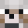

Геймплей · 0.2.1
Штами та здібності
Порівняйте всі дванадцять вбудованих форм і три їхні здібності.
Сильні та слабкі сторони
| Процідити | Хороший | Погано |
|---|---|---|
| Більше здоров’я, броні та шкоди, відновлюється в темряві, має імунітет до голоду | на 12% повільніше, горить на сонці, не може спати; м'ясо тільки в повному вигляді | |
| Сильніші стріли, нічне бачення, імунітет до отрути та голоду, м’якше падіння | Менше здоров'я, більше вибухів, горить на сонці, не спиться | |
| Займає менше від вибухів, швидше, додаткова броня, кріпери залишають вас у спокої | Боячись котів, вогонь шкодить більше | |
| Лазить по стінах, проходить через павутину, стрибає вище, бачить у темряві | Вогонь болить сильніше, не можу носити шолом із стадії IV | |
| Кроки через повні блоки, більше здоров’я та шкоди, стріли менше вражають вас | Горить вода і дощ | |
| Швидко плаває, дихає і бачить під водою | По суші повільний, на сонці горить; у повному вигляді він висихає через три хвилини від води | |
| Вогонь не може зашкодити вам на стадії III, летить на стадії IV, м’якше падає | Вода і дощ обпалюють і подрібнюють, стріли ранять більше | |
| Легке тіло, нічне бачення, найшвидший літач із етапу IV | Менше здоров'я, горить на сонці, немає нагрудної дошки на крилах | |
| Посіви ростуть швидше навколо вас, летить із стадії IV, ледь відчуває падіння | Менше здоров'я, тільки солодка їжа, дощ приземлює | |
 Вовк | Швидше, сильніше кусає, сире і тухле м'ясо добре | Тільки м'ясо, боїться лам, вогонь шкодить більше |
| Пігліни сприймають вас як одного з них, золото не потрібне. Вогонь менше шкодить, більше здоров'я і шкоди | Не можу викинути нічого золотого, боїться зомбі та зомбіфікованих свиней, слабший за межами Пустоти в повній формі | |
| Швидко плаває та плаває, зябра, чіткий підводний огляд, шипи, які завдають шкоди нападникам, більше броні та здоров’я | Повільно стрибає на сушу, погано бачить там, і на стадії IV не вистачає повітря без води |
Ключі здібностей і вартість
R розблоковується на етапі II, V на етапі III. Верхня здатність на B потребує повної форми та 100% дослідження. HUD показує час відновлення та незадоволені умови. Невдала спроба нічого не витрачає.
Блейз, фантом і бджола можуть вилетіти зі стадії IV, стрибнувши подвійним дотиком. Втеча використовує голод, а дощ або вода приземлює їх.
Здібності за типом
| Процідити | Р | В | B (верхівка) |
|---|---|---|---|
| Мертва плоть: швидка регенерація та стійкість | Ground Slam: вражає всіх навколо | Орда: найближчі зомбі кидаються за тим, хто заподіяв вам біль | |
| Мертве око: дивіться живі істоти крізь стіни | Залп: три стріли | Arrow Storm: дев'ять стріл | |
| Скидання тиску: відштовхує всіх назад | Камуфляж: кілька секунд невидимості | Детонація: потужний вибух, який коштує вам 4 HP і залишає блоки в спокої | |
| Наскок: стрибок вперед | Venom Spit: отруїти ціль | Кокон: сповільнює та послаблює ціль | |
| Блимає: телепортуйтеся, куди ви дивитесь | Void Stare: сповільнює та послаблює ціль | Згортання порожнечі: затягує всіх і сповільнює їх | |
| Water Surge: ривок під водою | Undertow: затягує всіх | Приплив: шкодить і сповільнює всіх навколо | |
| Вогняна куля | Вогняний залп: три вогняні кулі | Inferno: підпалює всіх навколо | |
| Wingbeat: стрибайте вгору та ковзайте вниз | Night Veil: невидимість у темряві | Пікірування: бомбардування цілі з пікірування з повітря | |
| Wingbeat: стрибайте вгору та пливіть вниз | Жало: отрута, коштує половину серця | The Swarm: бджоли поблизу йдуть за тим, хто завдав вам шкоди | |
| Вовк | Запах: бачити живі істоти крізь стіни | Leaping Bite: стрибайте в ціль і кусайте | Зграя: найближчі вовки переслідують того, хто завдав вам шкоди |
| Ф'юрі: сила і швидкість | Charge: атакувати ціль | Warband: сусідні свині приєднуються (тільки Nether) | |
| Сонар: дивіться живі істоти крізь стіни | Промінь: лазерне попадання з дистанції | Elder Curse: сповільнює та послаблює всіх навколо |